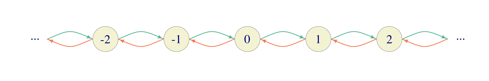
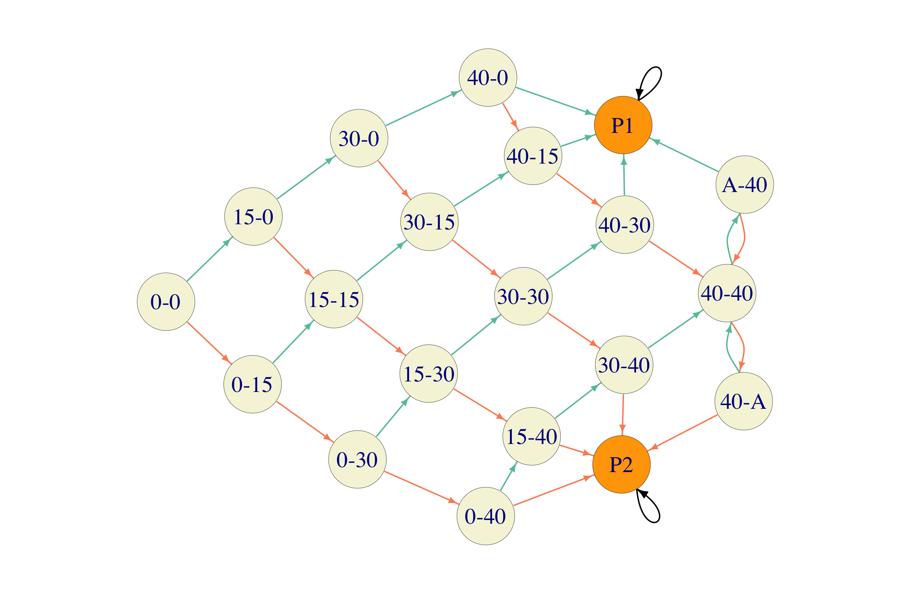
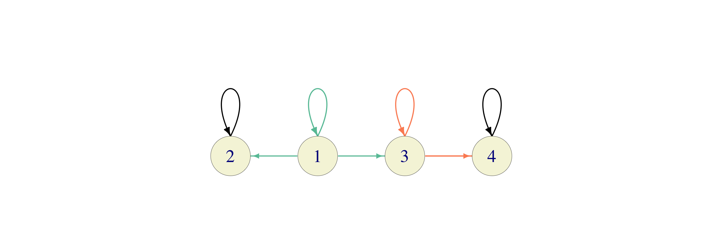
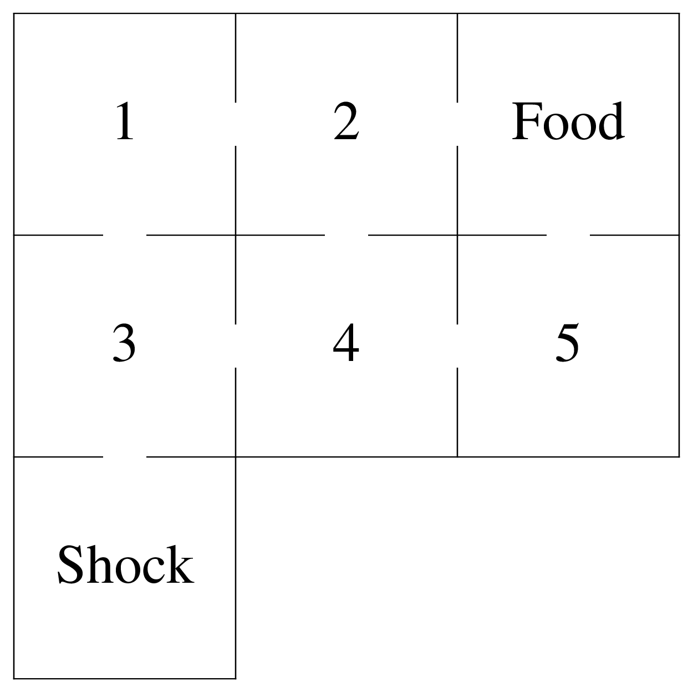

Chapter 5 Markov Chains
5.1 The Markov property
Simply put, a stochastic process has the Markov property if probabilities governing its future evolution depend only on its current position, and not on how it got there. Here is a more precise, mathematical, definition. It will be assumed throughout this course that any stochastic process \(\{X_n\}_{n\in {\mathbb{N}}_0}\) takes values in a countable set \(S\) called the state space. \(S\) will always be either finite, or countable, and a generic element of \(S\) will be denoted by \(i\) or \(j\).
A stochastic process \(\{X_n\}_{n\in {\mathbb{N}}_0}\) taking values in a countable state space \(S\) is called a Markov chain if \[\begin{equation} {\mathbb{P}}[ X_{n+1}=j|X_n=i, X_{n-1}=i_{n-1},\dots, X_1=i_1, X_0=i_0]= {\mathbb{P}}[ X_{n+1}=j|X_n=i], \tag{5.1} \end{equation}\] for all times \(n\in{\mathbb{N}}_0\), all states \(i,j,i_0, i_1, \dots, i_{n-1} \in S\), whenever the two conditional probabilities are well-defined, i.e., when \[\begin{equation} {\mathbb{P}}[ X_n=i, \dots, X_1=i_1, X_0=i_0]>0. \tag{5.2} \end{equation}\]
The Markov property is typically checked in the following way: one computes the left-hand side of (5.1) and shows that its value does not depend on \(i_{n-1},i_{n-2}, \dots, i_1, i_0\) (why is that enough?). The condition (5.2) will be assumed (without explicit mention) every time we write a conditional expression like to one in (5.1).
All chains in this course will be homogeneous, i.e., the conditional probabilities \({\mathbb{P}}[X_{n+1}=j|X_{n}=i]\) will not depend on the current time \(n\in{\mathbb{N}}_0\), i.e., \({\mathbb{P}}[X_{n+1}=j|X_{n}=i]={\mathbb{P}}[X_{m+1}=j|X_{m}=i]\), for \(m,n\in{\mathbb{N}}_0\).
Markov chains are (relatively) easy to work with because the Markov property allows us to compute all the probabilities, expectations, etc. we might be interested in by using only two ingredients.
The initial distribution: \({a}^{(0)}= \{ {a}^{(0)}_i\, : \, i\in S\}\), \({a}^{(0)}_i={\mathbb{P}}[X_0=i]\) - the initial probability distribution of the process, and
Transition probabilities: \(p_{ij}={\mathbb{P}}[X_{n+1}=j|X_n=i]\) - the mechanism that the process uses to jump around.
Indeed, if you know \({a}^{(0)}_i\) and \(p_{ij}\) for all \(i,j\in S\) and want to compute a joint distribution \({\mathbb{P}}[X_n=i_n, X_{n-1}=i_{n-1}, \dots, X_0=i_0]\), you can use the definition of conditional probability and the Markov property several times (the multiplication theorem from your elementary probability course) as follows: \[\begin{align} {\mathbb{P}}[X_n=i_n, \dots, X_0=i_0] &= {\mathbb{P}}[X_n=i_n| X_{n-1}=i_{n-1}, \dots,X_0=i_0] \cdot {\mathbb{P}}[X_{n-1}=i_{n-1}, \dots,X_0=i_0] \\ & = {\mathbb{P}}[X_n=i_n| X_{n-1}=i_{n-1}] \cdot {\mathbb{P}}[X_{n-1}=i_{n-1}, \dots,X_0=i_0]\\ &= p_{i_{n-1} i_{n}} {\mathbb{P}}[X_{n-1}=i_{n-1}, \dots,X_0=i_0] \end{align}\] If we repeat the same procedure \(n-2\) more times (and flip the order of factors), we get \[\begin{align} {\mathbb{P}}[X_n=i_n, \dots, X _0=i_0] &= {a}^{(0)}_{i_0} \cdot p_{i_0 i_1} \cdot p_{i_1 i_2}\cdot \ldots \cdot p_{i_{n-1} i_{n}} \end{align}\] Think of it this way: the probability of the process taking the trajectory \((i_0, i_1, \dots, i_n)\) is:
- the probability of starting at \(i_0\) (which is \({a}^{(0)}_{i_0}\)),
- multiplied by the probability of transitioning from \(i_0\) to \(i_1\) (which is \(p_{i_0 i_1}\)),
- multiplied by the probability of transitioning from \(i_1\) to \(i_2\) (which is \(p_{i_1 i_2}\)),
- etc.
When \(S\) is finite, there is no loss of generality in assuming that \(S=\{1,2,\dots, n\}\), and then we usually organize the entries of \({a}^{(0)}\) into a row vector \[{a}^{(0)}=({a}^{(0)}_1,{a}^{(0)}_2,\dots, {a}^{(0)}_n),\] and the transition probabilities \(p_{ij}\) into a square matrix \({\mathbf P}\), where \[{\mathbf P}=\begin{pmatrix} p_{11} & p_{12} & \dots & p_{1n} \\ p_{21} & p_{22} & \dots & p_{2n} \\ \vdots & \vdots & \ddots & \vdots \\ p_{n1} & p_{n2} & \dots & p_{nn} \\ \end{pmatrix}\] In the general case (\(S\) possibly infinite), one can still use the vector and matrix notation as before, but it becomes quite clumsy. For example, if \(S={\mathbb{Z}}\), then \({\mathbf P}\) is an infinite matrix \[{\mathbf P}=\begin{pmatrix} \ddots & \vdots & \vdots & \vdots & \\ \dots & p_{-1\, -1} & p_{-1\, 0} & p_{-1\, 1} & \dots \\ \dots & p_{0\, -1} & p_{0\, 0} & p_{0\, 1} & \dots \\ \dots & p_{1\, -1} & p_{1\, 0} & p_{1\, 1} & \dots \\ & \vdots & \vdots & \vdots & \ddots \\ \end{pmatrix}\]
5.2 First Examples
Here are some examples of Markov chains - you will see many more in problems and later chapters. Markov chains with a small number of states are often depicted as weighted directed graphs, whose nodes are the chain’s states, and the weight of the directed edge between \(i\) and \(j\) is \(p_{ij}\). Such graphs are called transition graphs and are an excellent way to visualize a number of important properties of the chain. A transition graph is included for most of the examples below. Edges are color-coded according to the probability assigned to them. Black is always \(1\), while other colors are uniquely assigned to different probabilities (edges carrying the same probability get the same color).
5.2.1 Random walks
Let \(\{X_n\}_{n\in {\mathbb{N}}_0}\) be a simple (possibly biased) random walk. Let us show that it indeed has the Markov property (5.1). Remember, first, that \[X_n=\sum_{k=1}^n \delta_k \text{ where }\delta_k \text{ are independent (possibly biased) coin-tosses.}\] For a choice of \(i_0, \dots, i_n, j=i_{n+1}\) (such that \(i_0=0\) and \(i_{k+1}-i_{k}=\pm 1\)) we have \[%\label{equ:} \nonumber \begin{split} {\mathbb{P}}[ X_{n+1}=i_{n+1}&|X_n=i_n, X_{n-1}=i_{n-1},\dots, X_1=i_1, X_0=i_0]\\ = & {\mathbb{P}}[ X_{n+1}-X_{n}=i_{n+1}-i_{n}|X_n=i_n, X_{n-1}=i_{n-1},\dots, X_1=i_1, X_0=i_0] \\ = & {\mathbb{P}}[ \delta_{n+1}=i_{n+1}-i_{n}|X_n=i_n, X_{n-1}=i_{n-1},\dots, X_1=i_1, X_0=i_0] \\= & {\mathbb{P}}[ \delta_{n+1}=i_{n+1}-i_n], \end{split}\]
where the last equality follows from the fact that the increment \(\delta_{n+1}\) is independent of the previous increments, and, therefore, also of the values of \(X_1,X_2, \dots, X_n\). The last line above does not depend on \(i_{n-1}, \dots, i_1, i_0\), so \(X\) indeed has the Markov property.
The state space \(S\) of \(\{X_n\}_{n\in {\mathbb{N}}_0}\) is the set \({\mathbb{Z}}\) of all integers, and the initial distribution \({a}^{(0)}\) is very simple: we start at \(0\) with probability \(1\) (so that \({a}^{(0)}_0=1\) and \({a}^{(0)}_i=0\), for \(i\not= 0\).). The transition probabilities are simple to write down \[p_{ij}= \begin{cases} p, & j=i+1 \\ q, & j=i-1 \\ 0, & \text{otherwise.} \end{cases}\] If you insist, these can be written down in an infinite matrix, \[{\mathbf P}=\begin{pmatrix} \ddots & \vdots & \vdots & \vdots & \vdots & \vdots & \\ \dots & 0 & p & 0 & 0 & 0 & \dots \\ \dots & q & 0 & p & 0 & 0 & \dots \\ \dots &0 &q & 0 & p & 0 & \dots \\ \dots &0 &0 & q& 0 & p& \dots \\ \dots &0 & 0 &0 & q& 0& \dots \\ \dots &0 & 0 &0 & 0& q& \dots \\ & \vdots & \vdots & \vdots & \vdots & \vdots & \ddots \\ \end{pmatrix}\] but this representation is typically not as useful as in the finite case.
Here is a (portion of) a transition graph for a simple random walk. Instead of writing probabilities on top of the edges, we color code them as follows: green is \(p\) and orange is \(1-p\).

5.2.2 Gambler’s ruin
In Gambler’s ruin, a gambler starts with \(\$x\), where \(0\leq x \leq a\in{\mathbb{N}}\) and in each play wins a dollar (with probability \(p\in (0,1)\)) and loses a dollar (with probability \(q=1-p\)). When the gambler reaches either \(0\) or \(a\), the game stops. For mathematical convenience, it is usually a good idea to keep the chain defined, even after the modeled phenomenon stops. This is usually accomplished by simply assuming that the process “stays alive” but remains “frozen in place” instead of disappearing. In our case, once the gambler reaches either of the states \(0\) and \(a\), he/she simply stays there forever.
Therefore, the transition probabilities are similar to those of a random walk, but differ from them at the boundaries \(0\) and \(a\). The state space is finite \(S=\{0,1,\dots, a\}\) and the matrix \({\mathbf P}\) is given by \[{\mathbf P}=\begin{pmatrix} 1 & 0 & 0 & 0 & \dots & 0 & 0 & 0 \\ q & 0 & p & 0 & \dots & 0 & 0 & 0 \\ 0 & q & 0 & p & \dots & 0 & 0 & 0 \\ 0 & 0 & q & 0 & \dots & 0 & 0 & 0 \\ \vdots & \vdots & \vdots & \vdots & \ddots & \vdots & \vdots & \vdots \\ 0 & 0 & 0 & 0 & \dots & 0 & p & 0 \\ 0 & 0 & 0 & 0 & \dots & q & 0 & p \\ 0 & 0 & 0 & 0 & \dots & 0 & 0 & 1 \\ \end{pmatrix}\]
In the picture below, green denotes the probability \(p\) and orange \(1-p\). As always, black is \(1\).

The initial distribution is deterministic: \[{a}^{(0)}_i= \begin{cases} 1,& i=x,\\ 0,& i\not= x. \end{cases}\]
5.2.3 Regime Switching
Consider a system with two different states; think about a simple weather forecast (rain/no rain), high/low water level in a reservoir, high/low volatility regime in a financial market, high/low level of economic growth, the political party in power, etc. Suppose that the states are called \(1\) and \(2\) and the probabilities \(p_{12}\) and \(p_{21}\) of switching states are given. The probabilities \(p_{11}=1-p_{12}\) and \(p_{22}=1-p_{21}\) correspond to the system staying in the same state. The transition matrix for this Markov chain with \(S=\{1,2\}\) is \[{\mathbf P}= \begin{pmatrix} p_{11} & p_{12} \\ p_{21} & p_{22}. \end{pmatrix}\] When \(p_{12}\) and \(p_{21}\) are large (close to \(1\)) the system nervously jumps between the two states. When they are small, there are long periods of stability (staying in the same state).
One of the assumptions behind regime-switching models is that the transitions (switches) can only happen in regular intervals (once a minute, once a day, once a year, etc.). This is a feature of all discrete-time Markov chains. One would need to use a continuous-time model to allow for the transitions between states at any point in time.
5.2.4 Deterministically monotone Markov chain
A stochastic process \(\{X_n\}_{n\in {\mathbb{N}}_0}\) with state space \(S={\mathbb{N}}_0\) such that \(X_n=n\) for \(n\in{\mathbb{N}}_0\) (no randomness here) is called Deterministically monotone Markov chain (DMMC). The transition matrix looks like this \[{\mathbf P}= \begin{pmatrix} 0 & 1 & 0 & 0 & \dots \\ 0 & 0 & 1 & 0 & \dots \\ 0 & 0 & 0 & 1 & \dots \\ \vdots & \vdots & \vdots & \vdots & \ddots \end{pmatrix}\]
and the transition graph like this:

It is a pretty boring chain; its main use is as a counterexample.
5.2.5 Not a Markov chain
Consider a frog jumping from a lily pad to a lily pad in a small forest pond. Suppose that there are \(N\) lily pads so that the state space can be described as \(S=\{1,2,\dots, N\}\). The frog starts on lily pad 1 at time \(n=0\), and jumps around in the following fashion: at time \(0\) it chooses any lily pad except for the one it is currently sitting on (with equal probability) and then jumps to it. At time \(n>0\), it chooses any lily pad other than the one it is sitting on and the one it visited immediately before (with equal probability) and jumps to it. The position \(\{X_n\}_{n\in {\mathbb{N}}_0}\) of the frog is not a Markov chain. Indeed, we have \[{\mathbb{P}}[X_3=1|X_2=2, X_1=3]= \frac{1}{N-2},\] while \[{\mathbb{P}}[X_3=1|X_2=2, X_1=1]=0.\]
A more dramatic version of this example would be the one where the frog remembers all the lily pads it had visited before, and only chooses among the remaining ones for the next jump.
5.2.6 Turning a non-Markov chain into a Markov chain
How can we turn the process the previous example into a Markov chain. Obviously, the problem is that the frog has to remember the number of the lily pad it came from in order to decide where to jump next. The way out is to make this information a part of the state. In other words, we need to change the state space. Instead of just \(S=\{1,2,\dots, N\}\), we set \(S= \{ (i_1, i_2)\, : \, i_1,i_2 \in\{1,2,\dots N\}\}\). In words, the state of the process will now contain not only the number of the current lily pad (i.e., \(i_2\)) but also the number of the lily pad we came from (i.e., \(i_1\)). This way, the frog will be in the state \((i_1,i_2)\) if it is currently on the lily pad number \(i_2\), and it arrived here from \(i_1\). There is a bit of freedom with the initial state, but we simply assume that we start from \((1,1)\). Starting from the state \((i_1,i_2)\), the frog can jump to any state of the form \((i_2, i_3)\), \(i_3\not= i_1,i_2\) (with equal probabilities). Note that some states will never be visited (like \((i,i)\) for \(i\not = 1\)), so we could have reduced the state space a little bit right from the start.
It is important to stress that the passage to the new state space defines a whole new stochastic process. It is therefore, not quite accurate, as the title suggests, to say that we “turned” a non-Markov process into a Markov process. Rather, we replaced a non-Markovian model of a given situation by a different, Markovian, one.
5.2.7 Deterministic functions of Markov chains do not need to be Markov chains
Let \(\{X_n\}_{n\in {\mathbb{N}}_0}\) be a Markov chain on the state space \(S\), and let \(f:S\to T\) be a function. The stochastic process \(Y_n= f(X_n)\) takes values in \(T\); is it necessarily a Markov chain?
We will see in this example that the answer is no. Let \(\{X_n\}_{n\in {\mathbb{N}}_0}\) be a simple symmetric random walk, with the usual state space \(S = {\mathbb{Z}}\). With \(r(m) = m\ (\text{mod } 3)\) denoting the remainder after the division by \(3\), we first define the process \(R_n = r(X_n)\) so that \[R_n=\begin{cases} 0, & \text{ if $X_n$ is divisible by 3,}\\ 1, & \text{ if $X_n-1$ is divisible by 3,}\\ 2, & \text{ if $X_n-2$ is divisible by 3.} \end{cases}\] Using \(R_n\) we define \(Y_n = (X_n-R_n)/3\) to be the corresponding quotient, so that \(Y_n\in{\mathbb{Z}}\) and \[3 Y_n \leq X_n <3 (Y_n+1).\] The process \(Y\) is of the form \(Y_n = f(X_n)\), where \(f(i)= \lfloor i/3 \rfloor\), and \(\lfloor x \rfloor\) is the largest integer not exceeding \(x\).
To show that \(Y\) is not a Markov chain, let us consider the the event \(A=\{Y_2=0, Y_1=0\}\). The only way for this to happen is if \(X_1=1\) and \(X_2=2\) or \(X_1=1\) and \(X_2=0\), so that \(A=\{X_1=1\}\). Also \(Y_3=1\) if and only if \(X_3=3\). Therefore \[{\mathbb{P}}[ Y_3=1|Y_2=0, Y_1=0]={\mathbb{P}}[ X_3=3| X_1=1]= 1/4.\] On the other hand, \(Y_2=0\) if and only if \(X_2=0\) or \(X_2=2\), so \({\mathbb{P}}[Y_2=0]= 3/4\). Finally, \(Y_3=1\) and \(Y_2=0\) if and only if \(X_3=3\) and so \({\mathbb{P}}[Y_3=1, Y_2=0]= 1/8\). Hence, \[{\mathbb{P}}[ Y_3=1|Y_2=0]={\mathbb{P}}[Y_3=1, Y_2=0]/{\mathbb{P}}[Y_2=0]= \frac{1/8}{3/4}= \frac{1}{6}.\] Therefore, \(Y\) is not a Markov chain. If you want a more dramatic example, try to modify this example so that one of the probabilities above is positive, but the other is zero.
The important property of the function \(f\) we applied to \(X\) is that it is not one-to-one. In other words, \(f\) collapses several states of \(X\) into a single state of \(Y\). This way, the “present” may end up containing so little information that the past suddenly becomes relevant for the dynamics of the future evolution.
5.2.8 A game of tennis
In a game of tennis, the scoring system is as follows: both players start with the score of \(0\). Each time player 1 wins a point (a.k.a. a rally), her score moves a step up in the following hierarchy \[0 \mapsto 15 \mapsto 30 \mapsto 40.\] Once she reaches \(40\) and scores a point, three things can happen:
if the score of player 2 is \(30\) or less, player 1 wins the game.
if the score of player 2 \(40\), the score of player 1 moves up to “advantage”, and
if the score of player 2 is “advantage”, nothing happens to the score of player 1 but the score of player 2 falls back to \(40\).
Finally, if the score of player 1 is “advantage” and she wins a point, she wins the game. The situation is entirely symmetric for player 2. We suppose that the probability that player 1 wins each point is \(p\in (0,1)\), independently of the current score. A situation like this is a typical example of a Markov chain in an applied setting. What are the states of the process? We obviously need to know both players’ scores and we also need to know if one of the players has won the game. Therefore, a possible state space is the following:
\[\begin{align} S= \Big\{ &(0,0), (0,15), (0,30), (0,40), (15,0), (15,15), (15,30), (15,40), (30,0), (30,15),\\ & (30,30), (30,40), (40,0), (40,15), (40,30), (40,40), (40,A), (A,40), P_1, P_2 \Big\} \end{align}\]
where \(A\) stands for “advantage” and \(P_1\) (resp., \(P_2\)) denotes the state where player 1 (resp., player 2) wins. It is not hard to assign probabilities to transitions between states. Once we reach either \(P_1\) or \(P_2\) the game stops. We can assume that the chain remains in that state forever, i.e., the state is absorbing.

The initial distribution is quite simple - we always start from the same state \((0,0)\), so that \({a}^{(0)}_{(0,0)}=1\) and \({a}^{(0)}_i=0\) for all \(i\in S\setminus\{(0,0)\}\).
How about the transition matrix? When the number of states is big (\(\# S=20\) in this case), transition matrices are useful in computer memory, but not so much on paper. Just for the fun of it, here is the transition matrix for our game-of-tennis chain (I am going to leave it up to you to figure out how rows/columns of the matrix match to states) \[ {\mathbf P}= \begin{pmatrix} 1 & 0 & 0 & 0 & 0 & 0 & 0 & 0 & 0 & 0 & 0 & 0 & 0 & 0 & 0 & 0 & 0 & 0 & 0 & 0 \\ 0 & 1 & 0 & 0 & 0 & 0 & 0 & 0 & 0 & 0 & 0 & 0 & 0 & 0 & 0 & 0 & 0 & 0 & 0 & 0 \\ 0 & 0 & 0 & q & 0 & 0 & p & 0 & 0 & 0 & 0 & 0 & 0 & 0 & 0 & 0 & 0 & 0 & 0 & 0 \\ 0 & 0 & 0 & 0 & q & 0 & 0 & p & 0 & 0 & 0 & 0 & 0 & 0 & 0 & 0 & 0 & 0 & 0 & 0 \\ 0 & 0 & 0 & 0 & 0 & q & 0 & 0 & p & 0 & 0 & 0 & 0 & 0 & 0 & 0 & 0 & 0 & 0 & 0 \\ 0 & q & 0 & 0 & 0 & 0 & 0 & 0 & 0 & p & 0 & 0 & 0 & 0 & 0 & 0 & 0 & 0 & 0 & 0 \\ 0 & 0 & 0 & 0 & 0 & 0 & 0 & q & 0 & 0 & p & 0 & 0 & 0 & 0 & 0 & 0 & 0 & 0 & 0 \\ 0 & 0 & 0 & 0 & 0 & 0 & 0 & 0 & q & 0 & 0 & p & 0 & 0 & 0 & 0 & 0 & 0 & 0 & 0 \\ 0 & 0 & 0 & 0 & 0 & 0 & 0 & 0 & 0 & q & 0 & 0 & p & 0 & 0 & 0 & 0 & 0 & 0 & 0 \\ 0 & q & 0 & 0 & 0 & 0 & 0 & 0 & 0 & 0 & 0 & 0 & 0 & p & 0 & 0 & 0 & 0 & 0 & 0 \\ 0 & 0 & 0 & 0 & 0 & 0 & 0 & 0 & 0 & 0 & 0 & q & 0 & 0 & p & 0 & 0 & 0 & 0 & 0 \\ 0 & 0 & 0 & 0 & 0 & 0 & 0 & 0 & 0 & 0 & 0 & 0 & q & 0 & 0 & p & 0 & 0 & 0 & 0 \\ 0 & 0 & 0 & 0 & 0 & 0 & 0 & 0 & 0 & 0 & 0 & 0 & 0 & q & 0 & 0 & p & 0 & 0 & 0 \\ 0 & q & 0 & 0 & 0 & 0 & 0 & 0 & 0 & 0 & 0 & 0 & 0 & 0 & 0 & 0 & 0 & p & 0 & 0 \\ p & 0 & 0 & 0 & 0 & 0 & 0 & 0 & 0 & 0 & 0 & 0 & 0 & 0 & 0 & q & 0 & 0 & 0 & 0 \\ p & 0 & 0 & 0 & 0 & 0 & 0 & 0 & 0 & 0 & 0 & 0 & 0 & 0 & 0 & 0 & q & 0 & 0 & 0 \\ p & 0 & 0 & 0 & 0 & 0 & 0 & 0 & 0 & 0 & 0 & 0 & 0 & 0 & 0 & 0 & 0 & q & 0 & 0 \\ 0 & 0 & 0 & 0 & 0 & 0 & 0 & 0 & 0 & 0 & 0 & 0 & 0 & 0 & 0 & 0 & 0 & 0 & q & p \\ 0 & q & 0 & 0 & 0 & 0 & 0 & 0 & 0 & 0 & 0 & 0 & 0 & 0 & 0 & 0 & 0 & p & 0 & 0 \\ p & 0 & 0 & 0 & 0 & 0 & 0 & 0 & 0 & 0 & 0 & 0 & 0 & 0 & 0 & 0 & 0 & q & 0 & 0 \\ \end{pmatrix} \]
Does the structure of a game of tennis make is easier or harder for the better player to win? In other words, if you had to play against the best tennis player in the world (I am rudely assuming that he or she is better than you), would you have a better chance of winning if you only played a point (rally), or if you played the whole game? We will give a precise answer to this question in a little while. In the meantime, try to guess.
5.3 Chapman-Kolmogorov equations
The transition probabilities \(p_{ij}\), \(i,j\in S\) tell us how a Markov chain jumps from one state to another in a single step. Think of it as a description of the local behavior of the chain. This is the information one can usually obtain from observations and modeling assumptions. On the other hand, it is the global (long-time) behavior of the model that provides the most interesting insights. In that spirit, we turn our attention to probabilities like this: \[{\mathbb{P}}[X_{k+n}=j|X_k=i] \text{ for } n = 1,2,\dots.\] Since we are assuming that all of our chains are homogeneous (transition probabilities do not change with time), this probability does not depend on the time \(k\), so we can define the multi-step transition probabilities \(p^{(n)}_{ij}\) as follows: \[p^{(n)}_{ij}={\mathbb{P}}[X_{k+n}=j|X_{k}=i]={\mathbb{P}}[ X_{n}=j|X_0=i].\] We allow \(n=0\) under the useful convention that \[p^{(0)}_{ij}=\begin{cases} 1, & i=j,\\ 0,& i\not = j. \end{cases}\] We note right away that the numbers \(p^{(n)}_{ij}\), \(i,j\in S\) naturally fit into an \(N\times N\)-matrix which we denote by \({\mathbf P}^{(n)}\). We note right away that \[\begin{equation} {\mathbf P}^{(0)}= \operatorname{Id}\text{ and } {\mathbf P}^{(1)}= {\mathbf P}, \tag{5.3} \end{equation}\] where \(\operatorname{Id}\) denotes the \(N\times N\) identity matrix.
The central result of this section is the following sequence of equalities connecting \({\mathbf P}^{(n)}\) for different values of \(n\), know as the Chapman-Kolmogorov equations: \[\begin{equation} {\mathbf P}^{(m+n)} = {\mathbf P}^{(m)} {\mathbf P}^{(n)}, \text{ for all } m,n \in {\mathbb{N}}_0. \tag{5.4} \end{equation}\] To see why this is true we start by computing \({\mathbb{P}}[ X_{n+m} = j, X_0=i]\). Since each trajectory from \(i\) to \(j\) in \(n+m\) steps has be somewhere at time \(n\), we can write \[\begin{equation} {\mathbb{P}}[ X_{n+m}= j, X_0 = i] = \sum_{k\in S} {\mathbb{P}}[X_{n+m} = j, X_{n} = k, X_0 = i]. \tag{5.5} \end{equation}\] By the multiplication rule, we have \[\begin{multline} {\mathbb{P}}[X_{n+m} = j, X_{n} = k, X_0 = i] = {\mathbb{P}}[ X_{n+m} = j | X_{n}=k, X_{0}=i] {\mathbb{P}}[X_{n}=k, X_0 = i], \tag{5.6} \end{multline}\] and then, by the Markov property: \[\begin{equation} {\mathbb{P}}[ X_{n+m} = j | X_{n}=k, X_{0}=i] = {\mathbb{P}}[ X_{n+m} = j | X_n = k]. \tag{5.7} \end{equation}\] Combining (5.5), (5.6) and (5.7) we obtain the following equality: \[\begin{equation} {\mathbb{P}}[ X_{n+m}= j, X_0 = i] = \sum_{k\in S} {\mathbb{P}}[ X_{n+m} = j | X_n = k] {\mathbb{P}}[X_{n}=k, X_0 = i]. \end{equation}\] which is nothing but (5.4); to see that, just remember how matrices are multiplied.
The punchline is that (5.4), together with (5.3) imply that \[\begin{equation} {\mathbf P}^{(n)}= {\mathbf P}^n, \tag{5.8} \end{equation}\] where the left-hand side is the matrix composed of the \(n\)-step transition probabilities, and the right hand side is the \(n\)-th (matrix) power of the (\(1\)-step) transition matrix \({\mathbf P}\). Using (5.8) allows us to write a simple expression for the distribution of the random variable \(X_n\), for \(n\in{\mathbb{N}}_0\). Remember that the initial distribution (the distribution of \(X_0\)) is denoted by \({a}^{(0)}=({a}^{(0)}_i)_{i\in S}\). Analogously, we define the vector \({a}^{(n)}=({a}^{(n)}_i)_{i\in S}\) by \[{a}^{(n)}_i={\mathbb{P}}[X_n=i],\ i\in S.\] Using the law of total probability, we have \[{a}^{(n)}_i={\mathbb{P}}[X_n=i]=\sum_{k\in S} {\mathbb{P}}[ X_0=k] {\mathbb{P}}[ X_n=i|X_0=k]= \sum_{k\in S} {a}^{(0)}_k p^{(n)}_{ki}.\] We usually interpret \({a}^{(0)}\) as a (row) vector, so the above relationship can be expressed using vector-matrix multiplication \[{a}^{(n)}={a}^{(0)}{\mathbf P}^n.\]
Problem 5.1 Find an explicit expression for \({\mathbf P}^{(n)}\) in the case of the regime-switching chain introduced above. Feel free to assume that \(p_{ij}>0\) for all \(i,j\).
Solution. It is often difficult to compute \({\mathbf P}^n\) for a general transition matrix \({\mathbf P}\) and a large \(n\). We will see later that it will be easier to find the limiting values \(\lim_{n\to\infty}p^{(n)}_{ij}\). The regime-switching chain is one of the few examples where everything can be done by hand.
By (5.8), we need to compute the \(n\)-th matrix power of the transition matrix \({\mathbf P}\). To make the notation a bit nicer, let us write \(a\) for \(p_{12}\) and \(b\) for \(p_{21}\), so that we can write \[{\mathbf P}= \begin{pmatrix} 1-a & a \\ b & 1-b \end{pmatrix}\]
The winning idea is to use diagonalization, and for that we start by writing down the characteristic equation \(\det (\lambda I-{\mathbf P})=0\) of the matrix \({\mathbf P}\): \[\label{equ:} \nonumber \begin{split} 0&=\det(\lambda I-{\mathbf P})= \begin{vmatrix} \lambda-1+a & -a \\ -b & \lambda-1+b \end{vmatrix}\\ & =((\lambda-1)+a)((\lambda-1)+b)-ab =(\lambda-1)(\lambda-(1-a-b)). \end{split}\] The eigenvalues are, therefore, \(\lambda_1=1\) and \(\lambda_2=1-a-b\), and the corresponding eigenvectors are \(v_1=\binom{1}{1}\) and \(v_2=\binom{a}{-b}\). Therefore, if we define \[V= \begin{pmatrix} 1 & a \\ 1 & -b \end{pmatrix} \text{ and }D= \begin{pmatrix} \lambda_1 & 0 \\ 0 & \lambda_2 \end{pmatrix}= \begin{pmatrix} 1 & 0 \\ 0 & (1-a-b) \end{pmatrix}\] we have \[{\mathbf P}V = V D,\text{ i.e., } {\mathbf P}= V D V^{-1}.\] This representation is very useful for taking (matrix) powers: \[\label{equ:60C4} \begin{split} {\mathbf P}^n &= (V D V^{-1})( V D V^{-1}) \dots (V D V^{-1})= V D^n V^{-1} \\ & = V \begin{pmatrix} 1 & 0 \\ 0 & (1-a-b)^n \end{pmatrix} V^{-1} \end{split}\] We assumed that all \(p_{ij}\) are positive which means, in particular, that \(a+b>0\), so that \[\begin{align} V^{-1} = \tfrac{1}{a+b} \begin{pmatrix} b & a \\ 1 & -1 \end{pmatrix}, \end{align}\]
and so \[\begin{align} {\mathbf P}^n &= V D^n V^{-1}= \begin{pmatrix} 1 & a \\ 1 & -b \end{pmatrix} \begin{pmatrix} 1 & 0 \\ 0 & (1-a-b)^n \end{pmatrix} \tfrac{1}{a+b} \begin{pmatrix} b & a \\ 1 & -1 \end{pmatrix}\\ &= \frac{1}{a+b} \begin{pmatrix} b & a \\ b & a \end{pmatrix} + \frac{(1-a-b)^n}{a+b} \begin{pmatrix} a & -a \\ b & -b \end{pmatrix}\\ &=\begin{pmatrix} \frac{b}{a+b}+(1-a-b)^n \frac{a}{a+b} & \frac{a}{a+b}-(1-a-b)^n \frac{a}{a+b}\\ \frac{b}{a+b}+(1-a-b)^n \frac{b}{a+b} & \frac{a}{a+b}-(1-a-b)^n \frac{b}{a+b} \end{pmatrix} \end{align}\]
The expression for \({\mathbf P}^n\) above tells us a lot about the structure of the multi-step probabilities \(p^{(n)}_{ij}\) for large \(n\). Note that the second matrix on the right-hand side above comes multiplied by \((1-a-b)^n\) which tends to \(0\) as \(n\to\infty\) (under our assumptions that \(p_{ij}>0\).) We can, therefore, write \[{\mathbf P}^n\sim \frac{1}{a+b} \begin{pmatrix} b & a \\ b & a \end{pmatrix} \text{ for large } n.\] The fact that the rows of the right-hand side above are equal points to the fact that, for large \(n\), \(p^{(n)}_{ij}\) does not depend (much) on the initial state \(i\). In other words, this Markov chain forgets its initial condition after a long period of time. This is a rule more than an exception, and we will study such phenomena in the following lectures.
5.4 How to simulate Markov chains
One of the (many) reasons Markov chains are a popular modeling tool is the ease with which they can be simulated. When we simulated a random walk, we started at \(0\) and built the process by adding independent coin-toss-distributed increments. We obtained the value of the next position of the walk by adding the present position and the value of an independent random variable. For general Markov chain, this procedure works almost verbatim, except that the function that combines the present position and a value of an independent random variable may be something other than addition. In general, we collapse the two parts of the process - a simulation of an independent random variable and its combination with the present position - into one. Given our position, we pick the row of the transition matrix that corresponds to it and then use its elements as the probabilities that govern our position tomorrow. It will all be clear once you read through the solution of the following problem.
Problem 5.2 Simulate \(1000\) trajectories of a gambler’s ruin Markov chain with \(a=3\), \(p=2/3\) and \(x=1\) (see subsection 5.2.2 above for the meaning of these constants). Use the Monte Carlo method to estimate the probability that the gambler will leave the casino with \(\$3\) in her pocket in at most \(T=100\) time periods.
Solution.
# state space
S = c(0, 1, 2, 3)
# transition matrix
P = matrix(c(1, 0, 0, 0,
1/3, 0, 2/3, 0,
0, 1/3, 0, 2/3,
0, 0, 0, 1),
byrow=T, ncol=4)
T = 100 # number of time periods
nsim = 1000 # number of simulations
# simulate the next position of the chain
draw_next = function(s) {
i = match(s, S) # the row number of the state s
sample(S, prob = P[i, ], size = 1)
}
# simulate a single trajectory of length T
# from the initial state
single_trajectory = function(initial_state) {
path = numeric(T)
last = initial_state
for (n in 1:T) {
path[n] = draw_next(last)
last = path[n]
}
return(path)
}
# simulate the entire chain
simulate_chain = function(initial_state) {
data.frame(X0 = initial_state,
t(replicate(
nsim, single_trajectory(initial_state)
)))
}
df = simulate_chain(1)
(p = mean(df$X100 == 3))
## [1] 0.59R. The function draw_next is at the heart of the simulation. Given the current state s, it looks up the row of the transition matrix P which corresponds to s. This is where the function match comes in handy - match(s,S) gives you the position of th element s in the vector S. Of course, if \(S = \{ 1,2,3, \dots, n\}\) then we don’t need to use match, as each state is “its own position”. In our case, S is a bit different, namely \(S=\{0,1,2,3\}\), and so match(s,S) is nothing by s+1. This is clearly an overkill in this case, but we still do it for didactical purposes.
Once the row corresponding to the state s is identified, we use its elements as the probabilities to be fed into the command sample, which, in turn, returns our next state and we repeat the procedure over and over (in this case \(T=100\) times).
5.5 Additional problems for Chapter 5
Problem 5.3 Let \(\{Y_n\}_{n\in {\mathbb{N}}_0}\) be a sequence of die-rolls, i.e., a sequence of independent random variables which take values \(1,2,\dots, 6\), each with probability \(1/6\). Let \(\{X_n\}_{n\in {\mathbb{N}}_0}\) be a stochastic process defined by \[X_n=\max (Y_0,Y_1, \dots, Y_n), \ n\in{\mathbb{N}}_0.\] In words, \(X_n\) is the maximal value rolled so far. Is \(\{X_n\}_{n\in {\mathbb{N}}_0}\) a Markov chain? If it is, find its transition matrix and the initial distribution. If it is not, give an example of how the Markov property is violated.
Click for Solution
Solution. It turns out that \(\{X_n\}_{n\in{\mathbb{N}}}\) is, indeed, a Markov chain. The value of \(X_{n+1}\) is either going to be equal to \(X_n\) if \(Y_{n+1}\) happens to be less than or equal to it, or it moves up to \(Y_{n+1}\), otherwise, i.e., \(X_{n+1}=\max(X_n,Y_{n+1})\). Therefore, the distribution of \(X_{n+1}\) depends on the previous values \(X_0,X_1,\dots, X_n\) only through \(X_n\), and, so, \(\{X_n\}_{n\in {\mathbb{N}}_0}\) is a Markov chain on the state space \(S=\{1,2,3,4,5,6\}\). The transition matrix is given by \[P=\begin{pmatrix} 1/6 & 1/6 & 1/6 & 1/6 & 1/6 & 1/6 \\ 0 & 1/3 & 1/6 & 1/6 & 1/6 & 1/6 \\ 0 & 0 & 1/2 & 1/6 & 1/6 & 1/6 \\ 0 & 0 & 0 & 2/3 & 1/6 & 1/6 \\ 0 & 0 & 0 & 0 & 5/6 & 1/6 \\ 0 & 0 & 0 & 0 & 0 & 1 \\ \end{pmatrix}\]
Problem 5.4 Let \(\{X_n\}_{n\in {\mathbb{N}}_0}\) be a simple symmetric random walk. For \(n\in{\mathbb{N}}_0\), define \(Y_n = 2X_n+1\), and let \(Z_n\) be the amount of time \(X_n\) spent strictly above \(0\) up to (and including) time \(n\), i.e. \[Z_0=0, Z_{n+1} - Z_n = \begin{cases} 1, & X_{n+1}>0 \\ 0, & X_ {n+1}\leq 0 \end{cases} , \text{ for }n\in{\mathbb{N}}_0.\] Is \(Y\) a Markov chain? Is \(Z\)?
Click for Solution
Solution. \(Y\) is a Markov chain because it is just a random walk started at \(1\) with steps of size \(2\) (a more rigorous proof would follow the same line of reasoning as the proof that random walks are Markov chains). \(Z\) is not a Markov chain because the knowledge of far history (beyond the present position) affects the likelihood of the next transition as the following example shows: \[\begin{aligned} {\mathbb{P}}[ Z_4=2| Z_0=0, Z_1=0, Z_2=0, Z_3=1]=1/2\end{aligned}\] but \[\begin{aligned} {\mathbb{P}}[ Z_4=2| Z_0=0, Z_1=1, Z_2=1, Z_3=1]= 0.\end{aligned}\]
Problem 5.5 Let \(\{\delta_n\}_{n\in{\mathbb{N}}}\) be a sequence of independent coin tosses (i.e., random variables with values \(T\) or \(H\) with equal probabilities). Let \(X_0=0\), and, for \(n\in{\mathbb{N}}\), let \(X_n\) be the number of times two consecutive \(\delta\)s take the same value in the first \(n+1\) tosses. For example, if the outcome of the coin tosses is TTHHTTTH …, we have \(X_0=0\), \(X_1=1\), \(X_2=1\), \(X_3=2\), \(X_4=2\), \(X_5=3\), \(X_6=4\), \(X_7=4\), …
Is \(\{X_n\}_{n\in {\mathbb{N}}_0}\) a Markov chain? If it is, describe its state space, the transition probabilities and the initial distribution. If it is not, show exactly how the Markov property is violated.
Click for Solution
Solution. Yes, the process \(X\) is a Markov chain, on the state space \(S={\mathbb{N}}_0\). To show that we make the following simple observation: we have \(X_{n}-X_{n-1}=1\) if \(\delta_n=\delta_{n+1}\) and \(X_n-X_{n-1}=0\), otherwise (for \(n\in{\mathbb{N}}\)). Therefore, \[{\mathbb{P}}[ X_{n+1}=i_n+1 | X_{n}=i_n, \dots, X_1=i_1, X_0=0] = {\mathbb{P}}[ \delta_{n+2}=\delta_{n+1} | X_{n}=i_n, \dots, X_1=i_1,X_0=0].\] Even if we knew the exact values of all \(\delta_1,\dots, \delta_n,\delta_{n+1}\), the (conditional) probability that \(\delta_{n+2}=\delta_{n+1}\) would still be \(1/2\), regardless of these values. Therefore, \[{\mathbb{P}}[ X_{n+1}=i_n+1| X_n=i_n,\dots, X_1=i_1, X_0=0] = \tfrac{1}{2},\] and, similarly, \[{\mathbb{P}}[ X_{n+1}=i_n| X_n=i_n,\dots, X_1=i_1, X_0=0] = \tfrac{1}{2}.\] Therefore, the conditional probability given all the past depends on the past only through the value of \(X_n\) (the current position), and we conclude that \(X\) is, indeed, a Markov process. Its initial distribution is deterministic \({\mathbb{P}}[X_0=0]=1\), and the transition probabilities, as computed above, are \[p_{ij}={\mathbb{P}}[ X_{n+1}=j| X_n=i] = \begin{cases} 1/2, &\text{ if } j=i+1, \\ 1/2, &\text{ if } j=i, \\ 0, &\text{ otherwise.} \end{cases}\] In fact, \(2 X_n - n\) is a simple symmetric random walk.
Problem 5.6 Let \(X\) be a Markov chain on \(N\) states, with the \(N\times N\) transition matrix \(P\). We construct a new Markov chain \(Y\) from the transition mechanism of \(X\) as follows: at each point in time, we toss a biased coin (probability of heads \(p\in (0,1)\)), independently of everything else. If it shows heads we move according to the transition matrix of \(X\). If it shows tails, we remain in the same state. What is the transition matrix of \(Y\)?
Click for Solution
Solution. Let \(Q=(q_{ij})\) denote the transition probability for the chain \(Y\). When \(i\ne j\), the chain \(Y\) will go from \(i\) to \(j\) in one step if and only if the coin shows heads and the chain \(X\) wants to jump from \(i\) to \(j\). Since the two events are independent, the probability of the former is \(p\), and of the later is \(p_{ij}\), we have \(q_{ij} = p p_{ij}\).
In the case \(i=j\), the chain \(Y\) will transition from \(i\) to \(i\) (i.e., stay in \(i\)) if either the coin shows heads, or if the coin shows tails and the chain \(X\) decides to stay in \(i\). Therefore, \(q_{ii} = p + (1-p) p_{ij}\), i.e., \[ Q = p \operatorname{Id}+(1-p) P,\] where \(\operatorname{Id}\) denotes \(N\times N\) identity matrix.
Problem 5.7 The red container has 100 red balls, and the blue container has 100 blue balls. In each step
- a container is selected (with equal probabilities),
- a ball is selected from it (all balls in the container are equally likely to be selected), and
- the selected ball is placed in the other container. If the selected container is empty, no ball is transferred.
Once there are 100 blue balls in the red container and 100 red balls in the blue container, the game stops.
We decide to model the situation as a Markov chain.
What is the state space \(S\) we can use? How large is it?
What is the initial distribution?
What are the transition probabilities between states? Don’t write the matrix, it is way too large; just write a general expression for \(p_{ij}\), \(i,j\in S\).
(Note: this is a version of the famous Ehrenfest Chain from statistical physics.)
Click for Solution
Solution. There are many ways in which one can solve this problem. Below is just one of them.
In order to describe the situation being modeled, we need to keep track of the number of balls of each color in each container. Therefore, one possibility is to take the set of all quadruplets \((r,b,R,B)\), \(r,b,R,b\in \{0,1,2,\dots, 100\}\) and this state space would have \(101^4\) elements. We know, however, that the total number of red balls, and the total number of blue balls is always equal to 100, so the knowledge of the composition of the red (say) container is enough to reconstruct the contents of the blue container. In other words, we can use the number of balls of each color in the red container only as our state, i.e. \[S= \{ (r,b)\, : \, r,b=0,1,\dots, 100\}.\] This state space has \(101\times 101=10201\) elements.
The initial distribution is deterministic: \({\mathbb{P}}[X_0=(100,0)]=1\) and \({\mathbb{P}}[X_0=i]=0\), for \(i\in S\setminus\{(100,0)\}\). In the vector notation, \[{a}^{(0)}=(0,0, \dots, 0, 1, 0, \dots, 0),\] where \(1\) is at the place corresponding to \((100,0)\).
Let us consider several separate cases, with the understanding that \(p_{ij}=0\), for all \(i,j\) not mentioned explicitly below:
One of the containers is empty. In that case, we are either in \((0,0)\) or in \((100,100)\). Let us describe the situation for \((0,0)\) first. If we choose the red container - and that happens with probability \(\tfrac{1}{2}\) - we stay in \((0,0)\): \[p_{(0,0),(0,0)}=\tfrac{1}{2}.\] If the blue container is chosen, a ball of either color will be chosen with probability \(\tfrac{100}{200}=\tfrac{1}{2}\), so \[p_{(0,0),(1,0)}=p_{(0,0),(0,1)}=\tfrac{1}{4}.\] By the same reasoning, \[p_{(100,100),(0,0)}=\tfrac{1}{2}\text{ and } p_{(100,100),(99,100)}=p_{(100,100),(100,99)}=\tfrac{1}{4}.\]
We are in the state \((0,100)\). By the description of the model, this is an absorbing state, so \(p_{(0,100),(0,100)}=1.\)
All other cases Suppose we are in the state \((r,b)\) where \((r,b)\not\in\{(0,100),(0,0),(100,100)\}\). If the red container is chosen, then the probability of getting a red ball is \(\tfrac{r}{r+b}\), so \[p_{(r,b),(r-1,b)}= \tfrac{1}{2}\tfrac{r}{r+b}.\] Similarly, \[p_{(r,b),(r,b-1)}= \tfrac{1}{2}\tfrac{b}{r+b}.\] In the blue container there are \(100-r\) red and \(100-b\) blue balls. Thus, \[p_{(r,b),(r+1,b)}= \tfrac{1}{2}\tfrac{100-r}{200-r-b},\] and \[p_{(r,b),(r,b+1)}= \tfrac{1}{2}\tfrac{100-b}{200-r-b}.\]
Problem 5.8 A “deck” of cards starts with 2 red and 2 black cards. A “move” consists of the following:
- pick a random card from the deck (if the deck is empty, do nothing),
- if the card is black and the card drawn on the previous move was also black, return it back to the deck,
- otherwise, throw the card away (this, in particular, applies to any card drawn on the first move, since there is no “previous” move at that time).
Model the situation using a Markov chain: find an appropriate state space, and sketch the transition graph with transition probabilities. How small can you make the state space?
What is the probability that the deck will be empty after exactly \(4\) moves? What is the probability that the deck will be empty eventually?
Click for Solution
Solution.
We need to keep track of the number of remaining cards of each color in the deck, as well as the color of the last card we picked (except at the beginning or when the deck is empty, when it does not matter). Therefore, the initial state will be \((2,2)\), the empty-deck state will be \((0,0)\) and the other states will be triplets of the form \((\#r, \#b, c)\), where \(\#r\) and \(\#b\) denote the number of cards (red and black) in the deck, and \(c\) is the color, \(R\) or \(B\), of the last card we picked. This way, the initial guess for the state space would be \[\begin{aligned} S_0 = \{&(2,2), (0,0),\\ & (2,1,B), (2,1,R), (1,2,B), (1,2,R),\\ & (1,1,B), (1,1,R), (0,2,B), (2,0,R), (2,0,B), (0,2,R),\\ & (0,1,B), (0,1,R), (1,0,B), (1,0,R) \} \end{aligned}\]
In order to decrease the size of the state space, we start the chain at \((2,2)\) and consider all trajectories it is possible to take from there. It turns out that states \((2,1,R), (1,2,B), (0,2,B), (2,0,R), (2,0,B)\) and \((1,0,R)\) can never be reached from \((2,2)\), so we might as well leave them out of the state space. That reduces the initial guess \(S_0\) to a smaller \(10\)-state, version \[\begin{equation} S = \{(2,2), (0,0), (2,1,B), (1,2,R), (1,1,B), (1,1,R), (0,2,R), (0,1,B), (0,1,R), (1,0,B) \} \end{equation}\] with the following transition graph:

You could further reduce the number of states to \(9\) by removing the initial state \((2,2)\) and choosing a non-deterministic distribution over the states that can be reached from them. There is something unsatisfying about that, though.
To get from \((2,2)\) to \((0,0)\) in exactly four steps, we need to follow one of the following three paths: \[\begin{aligned} & (2,2) \to (2,1,B) \to (1,1,R) \to (1,0,B) \to (0,0), \\ & (2,2) \to (2,1,B) \to (1,1,R) \to (0,1,R) \to (0,0), \text{ or }\\ & (2,2) \to (1,2,R) \to (1,1,B) \to (0,1,R) \to (0,0). \\ \end{aligned}\] Their respective probabilities happen to be the same, namely \(\tfrac{1}{2}\times \tfrac{2}{3} \times \tfrac{1}{2}\times 1 = \frac{1}{6}\), so the probability of hitting \((0,0)\) in exactly \(4\) steps is \(3 \times \frac{1}{6} = \tfrac{1}{2}\).
To compute the probability of hitting \((0,0)\) eventually, we note that this is guaranteed to happen sooner or later (see the graph above) if the first card we draw is black. It is also guaranteed to happen is the first card we draw is red, but the second one is black. In fact, the only way for this not to happen is to draw two red cards on the first two draws. This happens with probability \(\tfrac{1}{2}\times \frac{1}{3} = \frac{1}{6}\), so the required probability of ending up with an empty deck is \(1 - \frac{1}{6} = \frac{5}{6}\).
Problem 5.9 (Extra Credit) A country has \(m+1\) cities (\(m\in{\mathbb{N}}\)), one of which is the capital. There is a direct railway connection between each city and the capital, but there are no tracks between any two “non-capital” cities. A traveler starts in the capital and takes a train to a randomly chosen non-capital city (all cities are equally likely to be chosen), spends a night there and returns the next morning and immediately boards the train to the next city according to the same rule, spends the night there, …, etc. We assume that her choice of the city is independent of the cities visited in the past. Let \(\{X_n\}_{n\in {\mathbb{N}}_0}\) be the number of visited non-capital cities up to (and including) day \(n\), so that \(X_0=1\), but \(X_1\) could be either \(1\) or \(2\), etc.
Explain why \(\{X_n\}_{n\in {\mathbb{N}}_0}\) is a Markov chain on the appropriate state space \({\mathcal{S}}\) and the find the transition probabilities of \(\{X_n\}_{n\in {\mathbb{N}}_0}\), i.e., write an expression for \[{\mathbb{P}}[X_{n+1}=j|X_n=i], \text{ for $i,j\in S$.}\]
Let \(\tau_m\) be the first time the traveler has visited all \(m\) non-capital cities, i.e. \[\tau_m=\min \{ n\in{\mathbb{N}}_0\, : \, X_n=m\}.\] What is the distribution of \(\tau_m\), for \(m=1\) and \(m=2\).
Compute \({\mathbb{E}}[\tau_m]\) for general \(m\in{\mathbb{N}}\). What is the asymptotic behavior of \({\mathbb{E}}[\tau_m]\) as \(m\to\infty\)? More precisely, find a simple function \(f(m)\) of \(m\) (like \(m^2\) or \(\log(m)\)) such that \({\mathbb{E}}[\tau_m] \sim f(m)\), i.e., \(\lim_{m\to\infty} \frac{{\mathbb{E}}[\tau_m]}{f(m)} = 1\).
Click for Solution
Solution.
The natural state space for \(\{X_n\}_{n\in {\mathbb{N}}_0}\) is \(S=\{1,2,\dots, m\}\). It is clear that \({\mathbb{P}}[X_{n+1}=j|X_n=i]=0,\) unless, \(i=j\) or \(i=j+1\). If we start from the state \(i\), the process will remain in \(i\) if the traveler visits one of the already-visited cities, and move to \(i+1\) is the visited city has never been visited before. Thanks to the uniform distribution in the choice of the next city, the probability that a never-visited city will be selected is \(\tfrac{m-i}{m}\), and it does not depend on the (names of the) cities already visited, or on the times of their first visits; it only depends on their number. Consequently, the extra information about \(X_1,X_2,\dots, X_{n-1}\) will not change the probability of visiting \(j\) in any way, which is exactly what the Markov property is all about. Therefore, \(\{X_n\}_{n\in{\mathbb{N}}}\) is Markov and its transition probabilities are given by \[p_{ij}={\mathbb{P}}[X_{n+1}=j|X_{n}=i]= \begin{cases} 0, & j\not \in \{i,i+1\}\\ \tfrac{m-i}{m}, & j=i+1\\ \tfrac{i}{m}, & j=i. \end{cases}\] (Note: the situation would not be nearly as nice if the distribution of the choice of the next city were non-uniform. In that case, the list of the (names of the) already-visited cities would matter, and it is not clear that the described process has the Markov property (does it?). )
For \(m=1\), \(\tau_m=0\), so its distribution is deterministic and concentrated on \(0\). The case \(m=2\) is only slightly more complicated. After having visited his first city, the visitor has a probability of \(\tfrac{1}{2}\) of visiting it again, on each consecutive day. After a geometrically distributed number of days, he will visit another city and \(\tau_2\) will be realized. Therefore the distribution \(\{p_n\}_{n\in {\mathbb{N}}_0}\) of \(\tau_2\) is given by \[p_0=0, p_1=\tfrac{1}{2}, p_2=(\tfrac{1}{2})^2, p_3=(\tfrac{1}{2})^3,\dots\]
For \(m>1\), we can write \(\tau_m\) as \[\tau_m=\tau_1+(\tau_2-\tau_1)+\dots +(\tau_m-\tau_{m-1}),\] so that \[{\mathbb{E}}[\tau_m]={\mathbb{E}}[\tau_1]+{\mathbb{E}}[\tau_2-\tau_1]+\dots+{\mathbb{E}}[\tau_m-\tau_{m-1}].\] We know that \(\tau_1=0\) and for \(k=1,2,\dots, m-1\), the difference \(\tau_{k+1}-\tau_{k}\) denotes the waiting time before a never-before-visited city is visited, given that the number of already-visited cities is \(k\). This random variable is geometric with success probability given by \(\tfrac{m-k}{m}\), so its expectation is given by \[{\mathbb{E}}[\tau_{k+1}-\tau_k]= \frac{1}{ \tfrac{m-k}{m}}=\frac{m}{m-k}.\] Therefore, \[{\mathbb{E}}[\tau_m]=\sum_{k=1}^{m-1} \frac{m}{m-k}= m (1+\tfrac{1}{2}+\tfrac{1}{3}+\dots+\tfrac{1}{m-1}).\] By comparing it with the integral \(\int_1^m \frac{1}{x}\, dx\), it is possible to conclude that \(H_m=1+\tfrac{1}{2}+\dots+\tfrac{1}{m-1}\) behaves like \(\log m\), i.e., that \[\lim_{m\to\infty} \frac{H_m}{\log m} = 1.\] Therefore \({\mathbb{E}}[\tau_m] \sim f(m)\), where \(f(m) = m \log m\).
Problem 5.10 We start with two cups, call them \(A\) and \(B\). Cup \(A\) contains \(12\) oz of milk, and cup \(B\) \(12\) oz of water. The following procedure is then performed twice: first, half of the content of the glass \(A\) is transferred into class \(B\). Then, the contents of glass \(B\) are thoroughly mixed, and a third of its entire content transferred back to \(A\). Finally, the contents of the glass \(A\) are thoroughly mixed. What is the final amount of milk in glass A? What does this have to do with Markov chains?
Click for Solution
Solution. If there are \(a\) oz of milk and \(b\) oz of water in the glass \(A\) at time \(n\) (with \(a+b=12\)), then there are \(b\) oz of milk and \(a\) oz of water in the glass \(B\). After half of the content of glass \(A\) is moved to \(B\), it will contain \(b+\tfrac{1}{2}a\) oz of milk and \(a+\tfrac{1}{2}b\) oz of water. Transferring a third of that back to \(a\) leaves \(B\) with \((2/3 b + 1/3 a)\) oz of milk and \((2/3 a + 1/3 b)\) oz of water. Equivalently, \(A\) contains \((2/3 a + 1/3 b)\) oz of milk and \((1/3 a + 2/3 b)\) oz of water. This corresponds to the action of a Markov chain with the transition matrix \(P = \begin{bmatrix} 2/3 & 1/3 \\ 1/3 & 2/3 \end{bmatrix}\). We get the required amounts by computing \[\begin{aligned} (12,0) P^2 = (12,0) \begin{bmatrix} 5/9 & 4/9 \\ 4/9 & 5/9\end{bmatrix} = (20/3, 16/3).\end{aligned}\]
Problem 5.11 The state space of a Markov chain is \(S = \{1,2,3,4,5\}\), and the non-zero transition probabilities are given by \(p_{11} = 1/2\), \(p_{12}=1/2\), \(p_{23}=p_{34}=p_{45}=p_{51}=1\). Compute \(p^{(6)}_{12}\) without using software.
Click for Solution
Solution. As you can see from the transition graph below

You can go from \(1\) to \(2\) in \(6\) steps in exactly two ways: \[1 \to 2 \to 3 \to 4 \to 5 \to 1 \to 2\] and \[1 \to 1 \to 1 \to 1 \to 1 \to 1 \to 2\] The probability of the first path is \(2^{-2}\) and the probability of the second path is \(2^{-6}\) - they add up to \(\tfrac{17}{64}\).
Problem 5.12 A Markov chain has four states \(1\), \(2\), \(3\) and \(4\) and the following transition probabilities (the ones not listed are \(0\)) \[\begin{align} p_{11} = 1/3, \, p_{12} = 1/3, \, p_{13} = 1/3, \, p_{22} = 1, \\ p_{33} = 1/2, \, p_{34} = 1/2, \, p_{44}=1. \end{align}\]
Sketch the transition graph of this chain.
Compute the conditional probability \({\mathbb{P}}[ X_5 = 4 | X_1 = 1]\).
Compute the conditional probability \({\mathbb{P}}[ X_{20} = 3 | X_1 = 3]\).
Suppose that each of the \(4\) states is equally likely to be the initial state (i.e., the value of \(X_0\)). Compute the probability \({\mathbb{P}}[X_1 = 4]\).
Click for Solution
Solution.
Here is the transition graph of the chain:  where orange edges have probability \(1/2\), green \(1/3\) and black \(1\).
This is the probability that, starting from \(1\), we will be at \(4\) in exactly \(4\) steps. To compute it, we enumerate all possible trajectories from \(1\) to \(4\) of length \(4\), and then add their probabilities. These trajectories, and their probabilities, are given in the table below:
trajectory probability \(1 {\rightarrow}1 {\rightarrow}1 {\rightarrow}3 {\rightarrow}4\) \(\Big(\frac{1}{3}\Big)^3 \times \Big( \frac{1}{2} \Big)\) \(1 {\rightarrow}1 {\rightarrow}3 {\rightarrow}3 {\rightarrow}4\) \(\Big(\frac{1}{3}\Big)^2 \times \Big( \frac{1}{2} \Big)^2\) \(1 {\rightarrow}1 {\rightarrow}3 {\rightarrow}4 {\rightarrow}4\) \(\Big(\frac{1}{3}\Big)^2 \times \Big( \frac{1}{2} \Big) \times 1\) \(1 {\rightarrow}3 {\rightarrow}3 {\rightarrow}3 {\rightarrow}4\) \(\Big(\frac{1}{3}\Big)\times \Big( \frac{1}{2} \Big)^3\) \(1 {\rightarrow}3 {\rightarrow}3 {\rightarrow}4 {\rightarrow}4\) \(\Big(\frac{1}{3}\Big)\times \Big( \frac{1}{2} \Big)^2 \times 1\) \(1 {\rightarrow}3 {\rightarrow}4 {\rightarrow}4 {\rightarrow}4\) \(\Big(\frac{1}{3}\Big)\times \Big( \frac{1}{2} \Big) \times 1^3\) Therefore, the required probability is \[\begin{align} \Big(\frac{1}{3}\Big)^3 \times \Big( \frac{1}{2} \Big) + \Big(\frac{1}{3}\Big)^2 \times \Big( \frac{1}{2} \Big)^2 + \Big(\frac{1}{3}\Big)^2 \times \Big( \frac{1}{2} \Big)+ \Big(\frac{1}{3}\Big)\times \Big( \frac{1}{2} \Big)^3 + \Big(\frac{1}{3}\Big)\times \Big( \frac{1}{2} \Big)^2 + \Big(\frac{1}{3}\Big)\times \Big( \frac{1}{2} \Big). \end{align}\]
It evaluates to \(85/216\), or, approximately \(0.394\)
Once you leave state \(3\) there is no coming back. Therefore, the only way to be there \(19\) steps later is for all \(19\) steps to be \(3 {\rightarrow}3\). The probability of the \(3 {\rightarrow}3\) transition is \(1/2\), so the required probability is \((1/2)^{19}\).
We use the law of total probability: \[\begin{align} {\mathbb{P}}[ X_1 = 4] &= {\mathbb{P}}[ X_1 = 4| X_0 = 1]\times {\mathbb{P}}[ X_0=1] + {\mathbb{P}}[ X_1 = 4| X_0 = 2]\times {\mathbb{P}}[X_0=2]\\ &+ {\mathbb{P}}[ X_1 = 4| X_0 = 3]\times {\mathbb{P}}[X_0=3] + {\mathbb{P}}[ X_1 = 4| X_0 = 4]\times {\mathbb{P}}[X_0=4]\\ &= p_{14}\times \frac{1}{4} + p_{24}\times \frac{1}{4} + p_{34}\times \frac{1}{4} + p_{44}\times \frac{1}{4} = \frac{1}{2}\times \frac{1}{4} + 1\times \frac{1}{4} = \frac{3}{8} \end{align}\]
Problem 5.13 In a Gambler’s ruin problem with the state space \(S=\{0,1,2,3,4\}\) and the probability \(p=1/3\) of winning in a single game, compute the \(4\)-step transition probabilities \[p^{(4)}_{2 2} = {\mathbb{P}}[ X_{n+4}=2| X_n =2] \text{ and } p^{(4)}_{2 4} = {\mathbb{P}}[ X_{n+4}=4| X_n =2].\]
Click for Solution
Solution. There are four \(4\)-step trajectories that start in \(2\) and end in \(2\), with positive probabilities (remember, once you hit \(0\) or \(4\) you get stuck there), namely \[\begin{aligned} & 2 {\rightarrow}1 {\rightarrow}2 {\rightarrow}1 {\rightarrow}2, \quad 2 {\rightarrow}1 {\rightarrow}2 {\rightarrow}3 {\rightarrow}2, \quad \\ & 2 {\rightarrow}3 {\rightarrow}2 {\rightarrow}1 {\rightarrow}2, \quad 2 {\rightarrow}3 {\rightarrow}2 {\rightarrow}3 {\rightarrow}2.\end{aligned}\] Each has probability \((1/3)\times(2/3)\times(1/3)\times(2/3) = 4/81\) so the total probability is \(16/81\).
The (possible) trajectories that go from \(2\) to \(4\) in exactly 4 steps are \[\begin{aligned} 2 {\rightarrow}1 {\rightarrow}2 {\rightarrow}3 {\rightarrow}4, \quad 2 {\rightarrow}3 {\rightarrow}2 {\rightarrow}3 {\rightarrow}4\ \text{ and }\ 2 {\rightarrow}3 {\rightarrow}4 {\rightarrow}4 {\rightarrow}4.\end{aligned}\] The first two have the same probability, namely \((2/3)\times(1/3)\times(2/3)\times(2/3) = 8/81\), and the third one \((1/3)\times(2/3)\times(1)\times(1) = 18/81\) so \(p^{(4)}_{24} = 26/81\).
Problem 5.14 A car-insurance company classifies drivers in three categories: bad, neutral and good. The reclassification is done in January of each year and the probabilities for transitions between different categories is given by \[P= \begin{bmatrix} 1/2 & 1/2 & 0 \\ 1/5 & 2/5 & 2/5 \\ 1/5 & 1/5 & 3/5\end{bmatrix},\] where the first row/column corresponds to the bad category, the second to neutral and the third to good. The company started in January 1990 with 1400 drivers in each category. Estimate the number of drivers in each category in 2090. Assume that the total number of drivers does not change in time and use R for your computations.
Click for Solution
Solution. Equal numbers of drivers in each category corresponds to the uniform initial distribution, \(a^{(0)}=(1/3,1/3,1/3)\). The distribution of drivers in 2090 is given by the distribution \(a^{(100)}\) of \(X_{100}\) which is, in turn, given by \[a^{(100)}= a^{(0)} P^{100}.\] Finally, we need to compute the number of drivers in each category, so we multiply the result by the total number of drivers, i.e., \(3 \times 1400 = 4200\):
P = matrix(
c(1/2 , 1/2 , 0,
1/5 , 2/5 , 2/5 ,
1/5 , 1/5 , 3/5),
byrow=T, ncol=3)
# a0 needs to be a row matrix
a0 = matrix(c(1/3, 1/3, 1/3), nrow=1)
P100 = diag(3) # the 3x3 identity matrix
for (i in 1:100)
P100 = P100 %*% P
(a0 %*% P100) * 4200
## [,1] [,2] [,3]
## [1,] 1200 1500 1500Note: if you think that computing matrix powers using for loops is in poor taste, there are several R packages you can use. Have a look at this post if you are curious.
Problem 5.15 A zoologist, Dr. Gurkensaft, claims to have trained Basil the Rat so that it can avoid being shocked and find food, even in highly confusing situations. Another scientist, Dr. Hasenpfeffer does not agree. She says that Basil is stupid and cannot tell the difference between food and an electrical shocker until it gets very close to either of them.
The two decide to see who is right by performing the following experiment. Basil is put in the compartment \(3\) of a maze that looks like this:

Dr. Gurkensaft’s hypothesis is that, once in a compartment with \(k\) exits, Basil will prefer the exits that lead him closer to the food. Dr. Hasenpfeffer’s claim is that every time there are \(k\) exits from a compartment, Basil chooses each one with probability \(1/k\).
After repeating the experiment 100 times, Basil got shocked before getting to food \(52\) times and he reached food before being shocked \(48\) times.
Create an Markov chain that models this situation (draw a transition graph and mark the edges with their probabilities).
Use Monte Carlo to estimate the probability of being shocked before getting to food, under the assumption that Basil is stupid (all exits are equally likely).
Btw, who do you think is right? Whose side is the evidence (48 vs. 52) on? If you know how to perform an appropriate statistical test here, do it. If you don’t simply state what you think.
Click for Solution
Solution.
Basil’s behavior can be modeled by a Markov Chain with states corresponding to compartments, and transitions to their adjacency. The graph of such a chain, on the state space \(S=\{1,2,3,4,5,F,S\}\) would look like this (with black = \(1\), orange = \(1/2\) and green=\(1/3\))

To be able to do Monte Carlo, we need to construct its transition matrix. Since there are far fewer transitions than pairs of states, it is a good idea to start with a matrix of \(0\)s and then fill in the non-zero values. We also decide that \(F\) and \(S\) will be given the last two rows/columns, i.e., numbers \(6\) and \(7\):
P = matrix(0,nrow =7, ncol=7 ) P[1,2] = 1/2; P[1,3] = 1/2; P[2,1] = 1/3; P[2,4] = 1/3; P[2,6] = 1/3; P[3,1] = 1/3; P[3,4] = 1/3; P[3,7] = 1/3; P[4,2] = 1/3; P[4,3] = 1/3; P[4,5] = 1/3; P[5,4] = 1/2; P[5,6] = 1/2; P[6,6] = 1 P[7,7] = 1We continue by simulating
nsim = 1000trajectories of this chain, starting from the state \(3\). We compress and reuse the code from section 5.4 above:T = 100 # number of time periods nsim = 1000 # number of simulations single_trajectory = function(i) { path = numeric(T) last = i for (n in 1:T) { path[n] = sample(1:7, prob = P[last, ], size = 1) last = path[n] } return(path) } df = data.frame(X0 = 3, t(replicate(nsim, single_trajectory(3)))) (p_shocked = mean(df$X100 == 7)) ## [1] 0.58So, the probability of being shocked first is about \(0.58\). To be honest, what we computed up here is not \({\mathbb{P}}[X_{\tau_{S,F}} = S]\), as the problem required, but the probability \({\mathbb{P}}[ X_{100} = S]\). In general, these are not the same, but because both \(S\) and \(F\) are absorbing states, the events \(X_{100}=S\) and \(X_{\tau_{S,F}} = S\) differ only on the event where \(\tau_{F,S}>100\), i.e., when Basil has not been either shocked or fed after \(100\) steps.
To see what kind of an error we are making, we can examine the empirical distribution of \(X_{100}\) across our \(1000\) samples:
table(df$X100) ## ## 6 7 ## 419 581and conclude that, on this particular set of simulations, \(\tau_{S,F}\leq 100\), so no error has been made at all. In general, approximations like this are very useful in cases where we can expect the probability of non-absorption within a given time interval to be negligible. On the other hand, if you examine a typical trajectory of
df, you will see that most of the time it takes the value \(6\) of \(7\), so a lot of the computational effort goes to waste. But don’t worry about such things in this course.
So, is this enough evidence to conclude that Basil is, in fact, a smart rat? On one hand, the obtained probability \(0.58\) is somewhat higher than Basil’s observed shock rate of \(52\%\), but it is not clear just from those numbers are not due to simple luck of the draw, and not Basil’s alleged intelligence. Without doing any further statistical analysis, my personal guess would be “probably, but who knows”.
For those of you who know a bit of statistics: one can apply the binomial test (or, more precisely, its large-sample approximation) to test against the null hypothesis that Basil is stupid. Under the null, the number of times Basil will get shocked in 100 experiments is binomial, with parameters \(n=100\) and \(p=0.581\). Its normal approximation is \(N(np, \sqrt{np(1-p)}) = N(58.1, 4.934)\), so the \(z\)-score of the observed value, i.e., \(52\), is \(z = \tfrac{ 52 - 58.1}{ 4.934} = -1.236\). The standard normal CDF at \(z=-1.236\) is about \(0.11\), i.e., the \(p\)-value is about \(0.11\). That means that, by chance alone, a truly stupid rat would appear at least as smart as Basil in about \(11\%\) of experiments identical to the one described above. This kind of evidence is usually not considered sufficient to make a robust conclusion about Basil’s intelligence.
Problem 5.16 A math professor has \(4\) umbrellas. He keeps some of them at home and some in the office. Every morning, when he leaves home, he checks the weather and takes an umbrella with him if it rains. In case all the umbrellas are in the office, he gets wet. The same procedure is repeated in the afternoon when he leaves the office to go home. The professor lives in a tropical region, so the chance of rain in the afternoon is higher than in the morning; it is \(1/5\) in the afternoon and \(1/20\) in the morning. Whether it rains of not is independent of whether it rained the last time he checked.
On day \(0\), there are \(2\) umbrellas at home, and \(2\) in the office.
Construct a Markov chain that models the situation.
Use Monte Carlo to give an approximate answer the following questions:
- What is the expected number of trips the professor will manage before he gets wet?
- What is the probability that the first time he gets wet it is on his way home from the office?
Click for Solution
Solution.
We model the situation by a Markov chain whose stats are all of the form h\(m\)-\(n\) or \(m\)-\(n\)o, or “Wet” where h\(m\)-\(n\) means that the professor is at home, there are \(m\) umbrellas at home and \(n\) umbrellas at the office. Similarly, \(m\)-\(n\)o means that there are \(m\) umbrellas at home, \(n\) at the office and the professor is at the office.
The transitions between the states are simple to figure out. For example, from the state h\(4\)-\(1\) the professor will move to the state \(4\)-\(1\)o with probability \(19/20\) (if it does not rain) and \(3\)-\(2\)o with probability \(1/20\)? (if it rains). The professor can move to the state “Wet” only from h\(0\)-\(5\) (with probability \(1/20\)) or from \(5\)-\(0\)o (with probability \(1/5\)), and the state “Wet” is made absorbing. Here is the full transition graph, color-coded as follows: green is \(1/20\), pink is \(19/20\), orange is \(1/5\) and purple is \(4/5\):

The state “Wet” is absorbing, and, therefore, constitutes a one-element recurrent class. All the other states belong to a separate, transient, class. The periods of the state “Wet” is 1, while the periods of all other states are \(2\).
We prepare for Monte Carlo by building the state-space vector
Sand the transition matrixPfor this chain.S= c("h0-4", "h1-3", "h2-2", "h3-1", "h4-0", "0-4o", "1-3o", "2-2o", "3-1o", "4-0o", "Wet") P = matrix(c( 0, 0, 0, 0, 0, 0.95, 0, 0, 0, 0, 0.05, 0, 0, 0, 0, 0, 0.05, 0.95, 0, 0, 0, 0, 0, 0, 0, 0, 0, 0, 0.05, 0.95, 0, 0, 0, 0, 0, 0, 0, 0, 0, 0, 0.05, 0.95, 0, 0, 0, 0, 0, 0, 0, 0, 0, 0, 0.05, 0.95, 0, 0.8, 0.2, 0, 0, 0, 0, 0, 0, 0, 0, 0, 0, 0.8, 0.2, 0, 0, 0, 0, 0, 0, 0, 0, 0, 0, 0.8, 0.2, 0, 0, 0, 0, 0, 0, 0, 0, 0, 0, 0.8, 0.2, 0, 0, 0, 0, 0, 0, 0, 0, 0, 0, 0.8, 0, 0, 0, 0, 0, 0.2, 0, 0, 0, 0, 0, 0, 0, 0, 0, 0, 1 ), byrow=T, ncol = 11 )We reuse the code from the notes to simulate
nsim=1000paths of lengthT=300, - it is almost exactly the same as before, but we include it here for completion:T = 300 # number of time periods nsim = 1000 # number of simulations single_trajectory = function(i) { path = numeric(T) last = i for (n in 1:T) { path[n] = sample(1:11, prob = P[last, ], size = 1) last = path[n] } return(path) } i0 = 3 # the initial state is 'h2-2' which is at position 3 in S d = data.frame(X0 = i0, t(replicate(nsim, single_trajectory(i0))))First, we check that all \(1000\) trajectories reached the state 11 (“Wet”) during the first
T=300steps:table(d$X300) ## ## 11 ## 1000Good. Next, we need to find the first time a given trajectory hits 11 (the number of the state “Wet”). This can be done in several ways but perhaps the easiest is by combining built-in functions
match(which finds the first occurrence of an element in a vector) andapply(which applies a function to each row/column in a matric/data.frame):tau = apply(d, 1, function(x) match(11, x)) mean(tau) ## [1] 39So we get that the expected number of trips before the professor gets wet is about \(39\), which is about \(19.5\) days.
The second question can be answered in many ways. One possibility is to split the state “Wet” into two states, depending on the location the professor left just before he got wet. A simpler possibility is check the number of the state with index
tau-1in the data framedabove:
last_locations = integer(nsim) for (i in 1:nsim) last_locations[i] = d[i, tau[i] - 1] table(last_locations) ## last_locations ## 1 10 ## 10 990The states h\(0\)-\(4\) and \(0\)-\(4\)o have numbers \(1\) and \(10\) in the vector
Sof states. Therefore, the table obtained above tells us that just before getting wet the professor left his home in \(10\) draws out of \(1000\), and his office in the remaining \(990\) draws. Hence, the Monte-Carlo estimate of the required probability is \(0.99\).There is another, computationally simpler, but conceptually more tricky way of obtaining this estimate. Since there are \(11\) states in the chain, the “Wet” state can only be reached from two states with numbers \(1\) and \(10\) and all states (except for “Wet”) have period \(2\), we have the following dichotomy:
- if the “Wet” state was reached in an odd number of steps, the last “dry” location must have been “Home”, and
- if the “Wet” state was reached in an even number of steps, the last “dry” location must have been “Office”.
Therefore, it is enough to count the number of even and odd elements in
tau:tau_mod_2 = tau %% 2 table(tau_mod_2) ## tau_mod_2 ## 0 1 ## 10 990We get the same probability estimate as above.